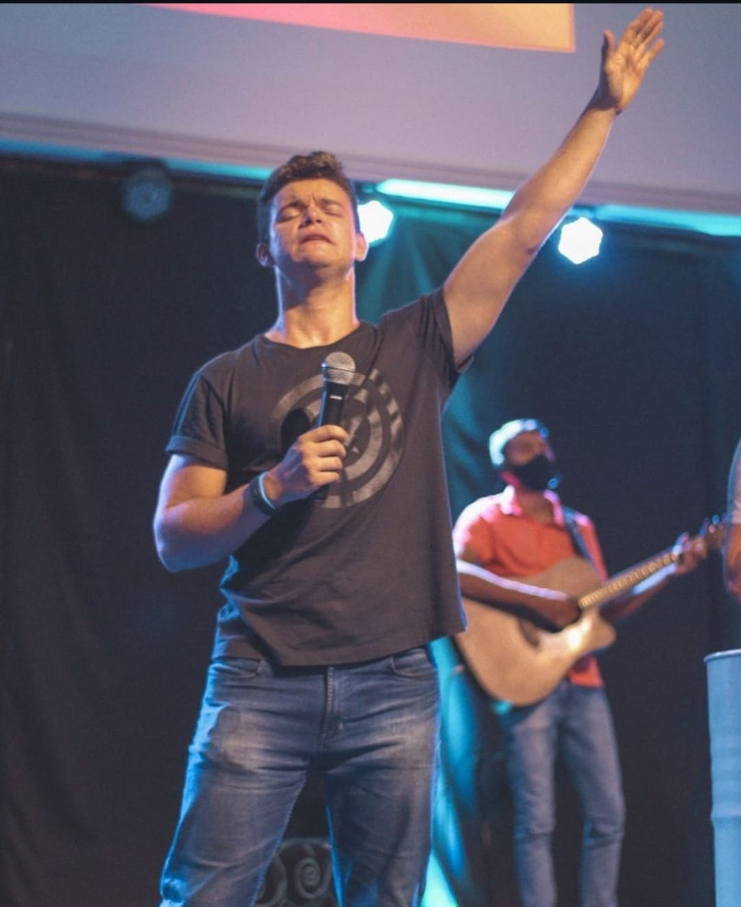

Sobre o Ministério
Weslley é teólogo e atua diretamente com jovens e adolescentes, ministrando sobre identidade, propósito e transformação de vida, levando uma mensagem relevante para os desafios atuais dessa geração.
Raiza é teóloga, psicóloga e pós-graduada em saúde mental, atuando com crianças e mulheres. Seu ministério une princípios bíblicos com cuidado emocional, promovendo cura interior, equilíbrio e fortalecimento espiritual.
Ambos são batistas e desenvolvem um ministério fundamentado na Palavra de Deus, com foco em formação de caráter, saúde emocional e crescimento espiritual.